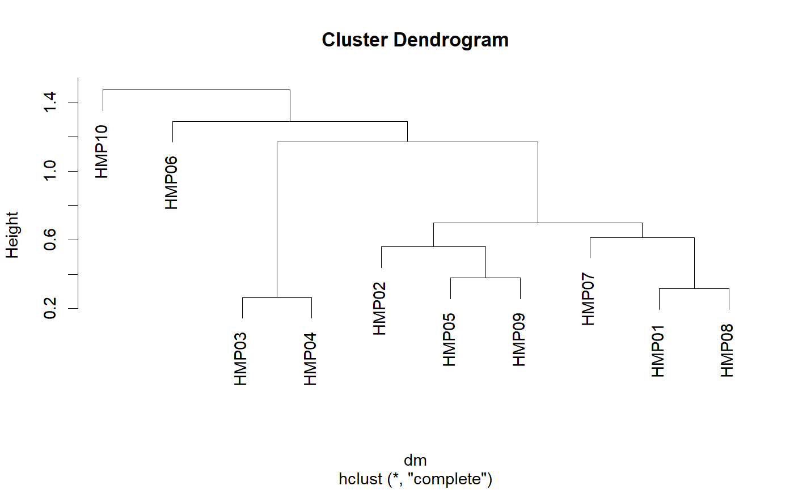

Make a distance matrix of samples vs samples.
beta.div(biom, method, weighted = TRUE, tree = NULL)
| biom | A |
|---|---|
| method | The distance algorithm to use. Options are:
“manhattan”, “euclidean”,
“bray-curtis”, “jaccard”, and
“unifrac”. Non-ambiguous abbrevations of the method
names are also accepted. A phylogentic tree must be present in
|
| weighted | Take relative abundances into account. When
|
| tree | A |
A distance matrix.
library(rbiom) infile <- system.file("extdata", "hmp50.biom", package = "rbiom") biom <- read.biom(infile) biom <- select(biom, 1:10) dm <- beta.div(biom, 'unifrac') as.matrix(dm)[1:4,1:4]#> HMP01 HMP02 HMP03 HMP04 #> HMP01 0.0000000 0.1950253 0.3687298 0.4239831 #> HMP02 0.1950253 0.0000000 0.2101679 0.3187533 #> HMP03 0.3687298 0.2101679 0.0000000 0.3040937 #> HMP04 0.4239831 0.3187533 0.3040937 0.0000000